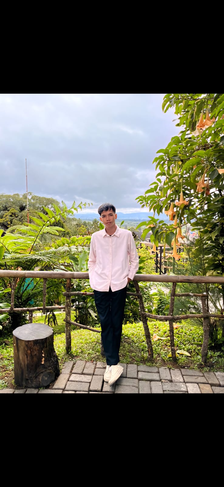
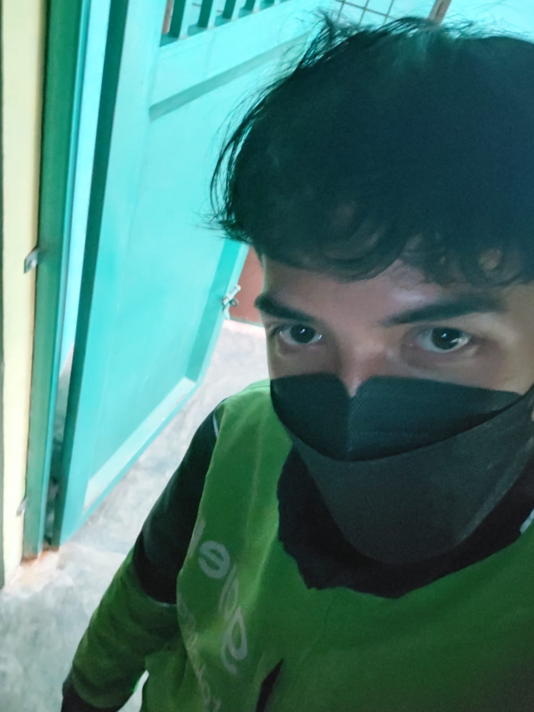
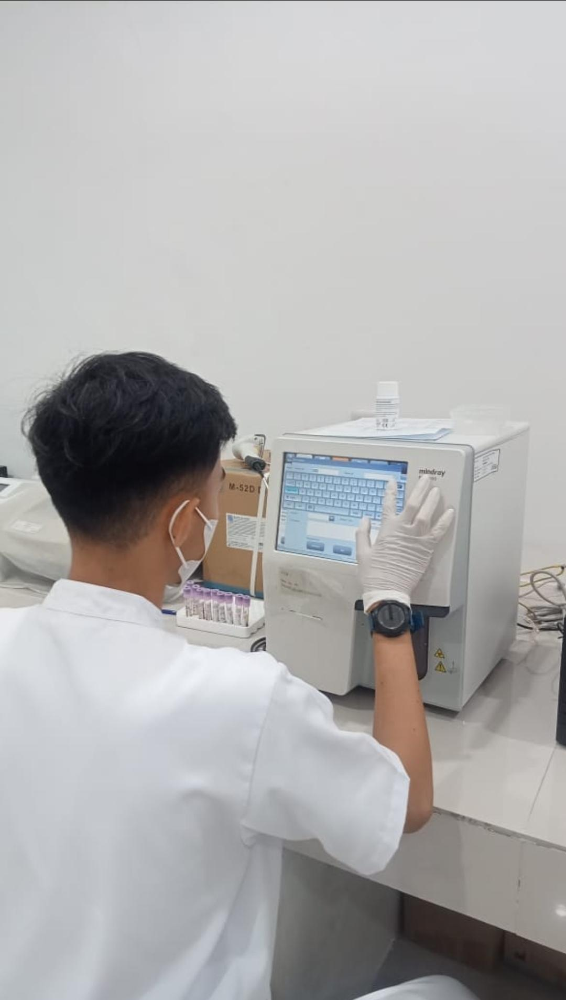

Mahasiswa | Driver Online | Web Development Enthusiast
Halo, saya Nehan. Saya adalah pribadi yang disiplin, bertanggung jawab, dan memiliki semangat belajar yang tinggi. Saya tertarik pada dunia teknologi, pengembangan website, administrasi data, dan pelayanan pelanggan. Saya selalu berusaha meningkatkan kemampuan dan pengalaman agar dapat memberikan hasil kerja yang terbaik.

Bekerja sebagai Driver Gojek sambil menjalani perkuliahan. Terbiasa melayani pelanggan, mengatur waktu dengan baik, serta bekerja secara mandiri dan bertanggung jawab. Pengalaman ini mengasah kemampuan komunikasi, disiplin, dan pemecahan masalah di lapangan

Saya memiliki pengalaman kerja sebagai Driver Gojek sejak masa SMK hingga saat ini, yang membantu saya mengembangkan kemampuan komunikasi, pelayanan pelanggan, manajemen waktu, serta kemampuan beradaptasi di berbagai situasi kerja. Selain itu, selama Praktik Kerja Lapangan (PKL) di Rumah Sakit, saya memperoleh pengalaman pasien, mempelajari prosedur pemasagan infus, pengambilan sample darah, serta dasar-dasar tindakan medis lainnya dibawah bimbingan tenaga kesehtan Profesional
SDN 064960
2013 - 2019SMPS Primbana
2019 - 2022SMKN 3
Jurusan Teknik Laboratorium Medik (TLM)
2022 - 2025Universitas Satya Terra Bhinneka
Program Studi Informatika
2025 - Sekarang